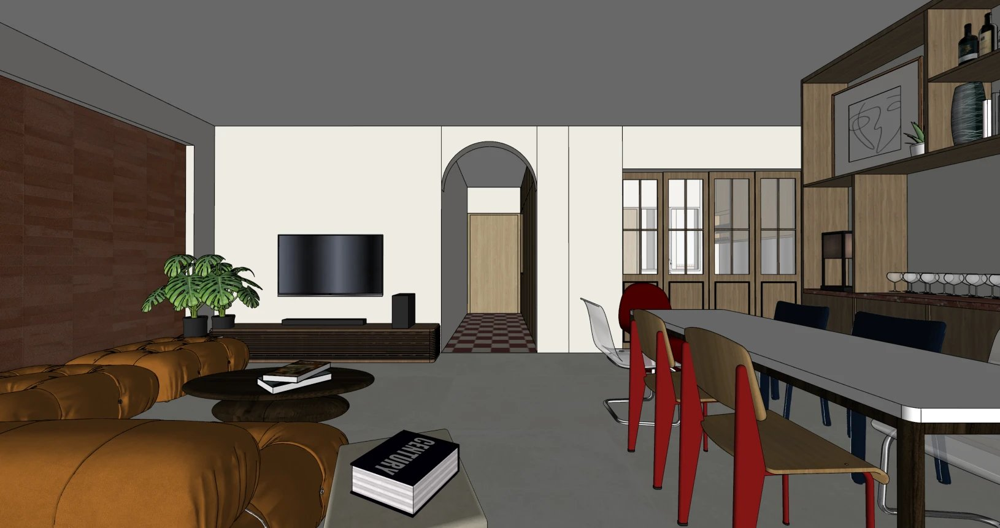
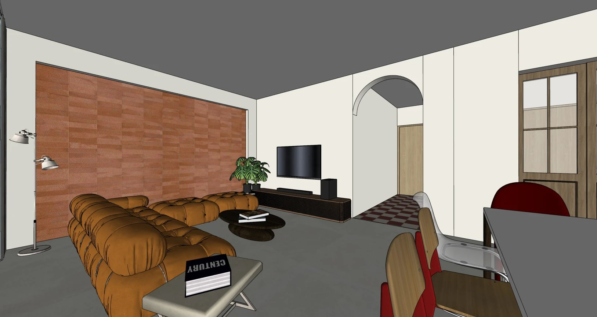
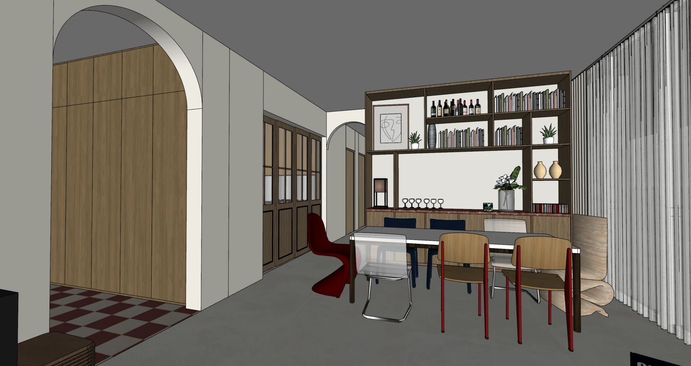
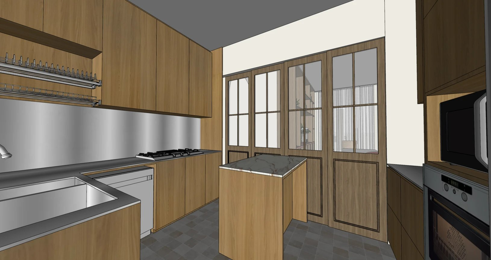
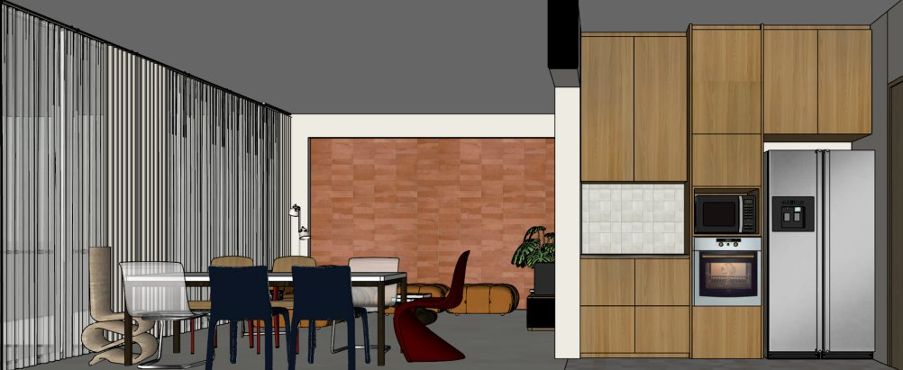
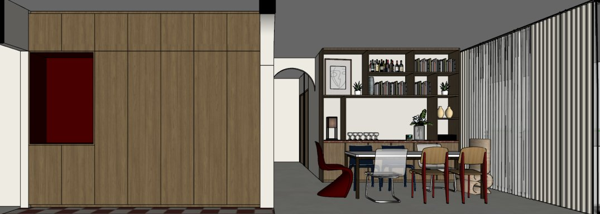

A home with a little history and a lot of character, made for long dinners and unhurried evenings. Warm earthy tones and deep reds give it a lived-in richness, like an old neighbourhood trattoria that never quite closes. Nothing feels too matched or too precious. It's a mix of pieces that seem to have been collected over time, each with its own story. Light moves easily from room to room, and the home feels open and generous, as if guests are always welcome. It's a place where the table stays set, the wine stays open, and nobody is in a rush to leave.




